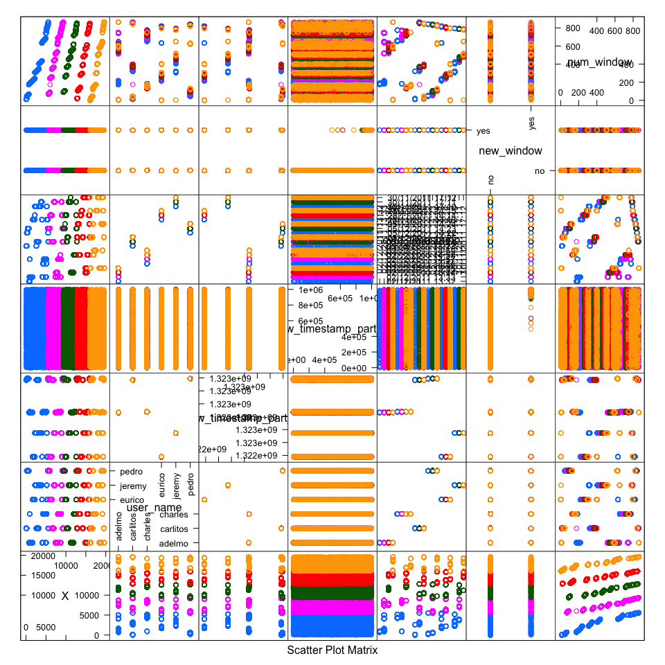
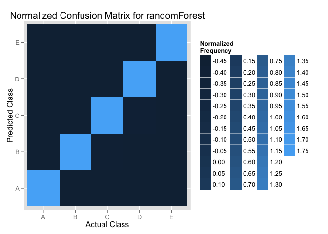
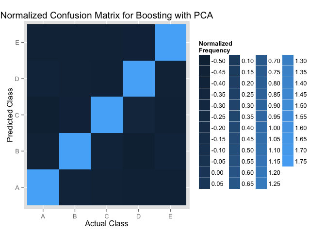
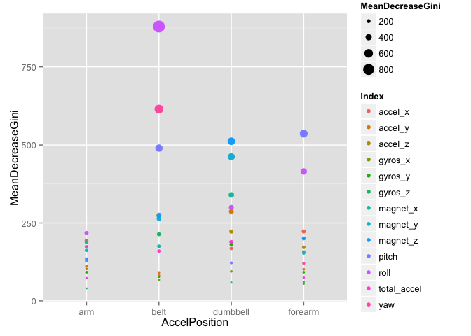

Practical machine learning Project
View the Project on GitHub shinezhou9/MachineLearningProject1
Shiming Zhou
Using devices such as Jawbone Up, Nike FuelBand, and Fitbit it is now possible to collect a large amount of data about personal activity relatively inexpensively. These type of devices are part of the quantified self movement, One thing that people regularly do is quantify how much of a particular activity they do, but they rarely quantify how well they do it. In this project, we use data from accelerometers on the belt, forearm, arm, and dumbell of 6 participants. They were asked to perform barbell lifts correctly and incorrectly in 5 different ways. And the result can potentially provide useful information for a large variety of applications,such as sports training.
The introduction of the WLE dataset Qualitative Activity Recognition of Weight Lifting Exercises Six young health participants were asked to perform one set of 10 repetitions of the Unilateral Dumbbell Biceps Curl in five different fashions: exactly according to the specification (Class A), throwing the elbows to the front (Class B), lifting the dumbbell only halfway (Class C), lowering the dumbbell only halfway (Class D) and throwing the hips to the front (Class E).
Class A corresponds to the specified execution of the exercise, while the other 4 classes correspond to common mistakes. Participants were supervised by an experienced weight lifter to make sure the execution complied to the manner they were supposed to simulate. The exercises were performed by six male participants aged between 20-28 years, with little weight lifting experience. We made sure that all participants could easily simulate the mistakes in a safe and controlled manner by using a relatively light dumbbell (1.25kg).
Data are collected using an on-body sensing approach and "ambient sensing approach".
Training dataset: 19622 observations and 160 variables.
We are going to predict the exercise class for the testing data which include 20 observations.
More information is available from the website here: Human Activity Recognition (see the section on the Weight Lifting Exercise Dataset).
library(downloader)
download("https://d396qusza40orc.cloudfront.net/predmachlearn/pml-training.csv", destfile="training.csv")
download("https://d396qusza40orc.cloudfront.net/predmachlearn/pml-testing.csv", destfile="testing.csv")
library(AppliedPredictiveModeling)
library(ggplot2)
training <- read.csv("training.csv", na.string="#DIV/0!")
testing <- read.csv("testing.csv", na.string="#DIV/0!")
library(caret)
names(training)[1:7]
## [1] "X" "user_name" "raw_timestamp_part_1"
## [4] "raw_timestamp_part_2" "cvtd_timestamp" "new_window"
## [7] "num_window"
featurePlot(x=training[,1:7], y=training$classe, plot="pairs")

training <- training[,-c(1:7)]
testing <- testing[,-c(1:7)]
From the pair plots, We can see that the first seven variables make no sence to the classe prediction, the first column is the seriel number of the observations. and the prediction should not consider the participants's name, the activity time, etc when building the model used for make generalized prediction in the future. Therefore, we removed the first seven variables from the dataset.
## max_roll_belt max_picth_belt min_roll_belt min_pitch_belt
## NA :19216 NA :19216 NA :19216 NA :19216
## -87.9 : 11 18 : 100 -87.8 : 12 17 : 114
## 166 : 11 5 : 65 -88.2 : 12 2 : 52
## -87.6 : 10 3 : 50 -87.7 : 10 3 : 50
## -87.7 : 10 4 : 40 161 : 10 4 : 50
## -88.2 : 10 20 : 36 -88.4 : 9 18 : 45
## (Other): 354 (Other): 115 (Other): 353 (Other): 95
## amplitude_roll_belt amplitude_pitch_belt var_total_accel_belt
## NA :19216 NA :19216 NA :19216
## 0.2 : 40 1 : 216 0.2 : 117
## 1 : 31 2 : 71 0.1 : 82
## 0.3 : 27 0 : 32 0 : 59
## 0.1 : 26 3 : 18 0.3 : 52
## 0.4 : 18 4 : 13 0.4 : 8
## (Other): 264 (Other): 56 (Other): 88
## avg_roll_belt stddev_roll_belt var_roll_belt avg_pitch_belt
## NA :19216 NA :19216 NA :19216 NA :19216
## 1.3 : 16 0.1 : 53 0 : 126 4.5 : 11
## 1.1 : 15 0.4 : 51 0.1 : 78 -43.6 : 8
## 1.5 : 15 0.5 : 50 0.2 : 56 4.6 : 8
## 0.7 : 14 0.2 : 46 0.3 : 23 5 : 8
## 0.8 : 14 0.3 : 41 0.4 : 10 25.5 : 7
## (Other): 332 (Other): 165 (Other): 113 (Other): 364
## stddev_pitch_belt var_pitch_belt avg_yaw_belt stddev_yaw_belt
## NA :19216 NA :19216 NA :19216 NA :19216
## 0.2 : 72 0 : 119 -88 : 12 0.1 : 83
## 0.3 : 62 0.1 : 91 -87.9 : 10 0.2 : 49
## 0.1 : 57 0.2 : 38 -88.2 : 10 0 : 44
## 0.4 : 38 0.3 : 22 -87.7 : 9 0.5 : 35
## 0.5 : 24 0.4 : 14 -87.8 : 7 0.4 : 32
## (Other): 153 (Other): 122 (Other): 358 (Other): 163
## var_yaw_belt var_accel_arm avg_roll_arm stddev_roll_arm
## NA :19216 NA :19216 NA :19216 NA :19216
## 0 : 66 0 : 11 0 : 77 0 : 77
## 0.01 : 44 0.1582 : 2 -0.7853 : 1 0.05 : 1
## 0.02 : 24 0.0179 : 1 -1.9176 : 1 0.1081 : 1
## 0.03 : 16 0.02 : 1 -10.8644: 1 0.2323 : 1
## 0.25 : 13 0.0222 : 1 -10.9094: 1 0.3331 : 1
## (Other): 243 (Other): 390 (Other) : 325 (Other): 325
## var_roll_arm avg_pitch_arm stddev_pitch_arm var_pitch_arm
## NA :19216 NA :19216 NA :19216 NA :19216
## 0 : 77 0 : 77 0 : 77 0 : 77
## 0.0025 : 1 -0.3724: 1 0.0153 : 1 0.0182 : 1
## 0.0117 : 1 -0.4137: 1 0.135 : 1 0.0275 : 1
## 0.054 : 1 -0.5892: 1 0.1657 : 1 0.0488 : 1
## 0.111 : 1 -0.6586: 1 0.2209 : 1 0.067 : 1
## (Other): 325 (Other): 325 (Other): 325 (Other): 325
## avg_yaw_arm stddev_yaw_arm var_yaw_arm max_roll_arm
## NA :19216 NA :19216 NA :19216 NA :19216
## 0 : 77 0 : 80 0 : 80 0 : 77
## -0.0188 : 1 0.3471 : 1 0.1205 : 1 16.8 : 3
## -0.07 : 1 0.3594 : 1 0.1292 : 1 20.4 : 3
## -10.4154: 1 0.4552 : 1 0.2072 : 1 30.5 : 3
## -10.8806: 1 0.4871 : 1 0.2373 : 1 8.5 : 3
## (Other) : 325 (Other): 322 (Other): 322 (Other): 317
## max_picth_arm max_yaw_arm min_roll_arm min_pitch_arm
## NA :19216 NA :19216 NA :19216 NA :19216
## 0 : 77 32 : 27 0 : 77 0 : 77
## 108 : 6 33 : 22 -41.9 : 4 -113 : 4
## 113 : 5 30 : 19 -23.1 : 3 -103 : 3
## 102 : 4 34 : 19 -37.1 : 3 -104 : 3
## 103 : 4 31 : 18 -43.5 : 3 -108 : 3
## (Other): 310 (Other): 301 (Other): 316 (Other): 316
## min_yaw_arm amplitude_roll_arm amplitude_pitch_arm amplitude_yaw_arm
## NA :19216 NA :19216 NA :19216 NA :19216
## 10 : 26 0 : 77 0 : 80 1 : 28
## 5 : 26 1.3 : 3 1 : 4 22 : 27
## 13 : 25 15.7 : 3 125.2 : 3 21 : 18
## 14 : 22 1.6 : 2 132.8 : 3 24 : 17
## 7 : 21 17.9 : 2 2 : 3 25 : 17
## (Other): 286 (Other): 319 (Other): 313 (Other): 299
## max_roll_dumbbell max_picth_dumbbell min_roll_dumbbell min_pitch_dumbbell
## NA :19216 NA :19216 NA :19216 NA :19216
## -36.4 : 4 14.7 : 4 -59 : 4 0 : 5
## -38.2 : 4 -38.2 : 3 0 : 4 -22.4 : 3
## -49.4 : 4 101.2 : 3 -32.7 : 3 -38.2 : 3
## -49.7 : 3 126.4 : 3 -33.1 : 3 -81.6 : 3
## 16.8 : 3 134.9 : 3 -38 : 3 -85.8 : 3
## (Other): 388 (Other): 390 (Other): 389 (Other): 389
## amplitude_roll_dumbbell amplitude_pitch_dumbbell var_accel_dumbbell
## NA :19216 NA :19216 NA :19216
## 0 : 16 0 : 16 0 : 18
## 19.31 : 2 118.4 : 2 0.1949 : 3
## 2.72 : 2 13.45 : 2 0.0217 : 2
## 20.11 : 2 21.76 : 2 0.4311 : 2
## 29.48 : 2 23.88 : 2 1.3929 : 2
## (Other): 382 (Other): 382 (Other): 379
## avg_roll_dumbbell stddev_roll_dumbbell var_roll_dumbbell
## NA :19216 NA :19216 NA :19216
## -101.5169: 3 0 : 16 0 : 16
## 125.9932 : 3 0.1811 : 1 0.0328 : 1
## 52.66 : 3 0.2994 : 1 0.0896 : 1
## -107.4901: 2 0.3015 : 1 0.0909 : 1
## 109.2254 : 2 0.3665 : 1 0.1343 : 1
## (Other) : 393 (Other): 386 (Other): 386
## avg_pitch_dumbbell stddev_pitch_dumbbell var_pitch_dumbbell
## NA :19216 NA :19216 NA :19216
## -38.2221: 3 0 : 16 0 : 16
## 16.8326 : 3 0.2384 : 1 0.0568 : 1
## 27.1869 : 3 0.246 : 1 0.0605 : 1
## -43.9609: 2 0.2687 : 1 0.0722 : 1
## -61.3062: 2 0.2798 : 1 0.0783 : 1
## (Other) : 393 (Other): 386 (Other): 386
## avg_yaw_dumbbell stddev_yaw_dumbbell var_yaw_dumbbell max_roll_forearm
## NA :19216 NA :19216 NA :19216 NA :19216
## -38.2221: 3 0 : 16 0 : 16 0 : 83
## 101.2451: 3 0.256 : 1 0.0656 : 1 -63.7 : 3
## 14.7001 : 3 0.2581 : 1 0.0666 : 1 23.7 : 3
## -22.378 : 2 0.2864 : 1 0.082 : 1 28.8 : 3
## 21.4432 : 2 0.3249 : 1 0.1056 : 1 29.6 : 3
## (Other) : 393 (Other): 386 (Other): 386 (Other): 311
## max_picth_forearm min_roll_forearm min_pitch_forearm
## NA :19216 NA :19216 NA :19216
## 0 : 83 0 : 83 0 : 83
## 179 : 28 -0.4 : 3 -179 : 29
## 178 : 20 -13.8 : 3 -178 : 25
## 176 : 16 -2.7 : 3 -180 : 17
## 177 : 14 12.8 : 3 -176 : 13
## (Other): 245 (Other): 311 (Other): 239
## amplitude_roll_forearm amplitude_pitch_forearm var_accel_forearm
## NA :19216 NA :19216 NA :19216
## 0 : 83 0 : 85 0 : 7
## 1.7 : 4 354 : 26 0.02326: 2
## 0.3 : 3 356 : 13 0.03634: 1
## 1 : 3 358 : 13 0.06082: 1
## 2.7 : 3 1 : 12 0.06753: 1
## (Other): 310 (Other): 257 (Other): 394
## avg_roll_forearm stddev_roll_forearm var_roll_forearm avg_pitch_forearm
## NA :19216 NA :19216 NA :19216 NA :19216
## 0 : 83 0 : 87 0 : 87 0 : 83
## 148 : 3 0.13736: 1 0.01887: 1 -0.38473: 1
## -0.04542: 1 0.20927: 1 0.04379: 1 -0.56106: 1
## -0.71875: 1 0.23772: 1 0.05651: 1 -0.59022: 1
## -0.97204: 1 0.24204: 1 0.05858: 1 -0.84531: 1
## (Other) : 317 (Other): 315 (Other): 315 (Other) : 319
## stddev_pitch_forearm var_pitch_forearm avg_yaw_forearm
## NA :19216 NA :19216 NA :19216
## 0 : 83 0 : 83 0 : 83
## 0.82447: 2 0.00043: 1 -1.07213 : 1
## 0.02082: 1 0.00371: 1 -1.5242 : 1
## 0.06088: 1 0.00559: 1 -10.14286 : 1
## 0.07474: 1 0.00611: 1 -100.77442: 1
## (Other): 318 (Other): 319 (Other) : 319
## stddev_yaw_forearm var_yaw_forearm classe
## NA :19216 NA :19216 A:5580
## 0 : 85 0 : 85 B:3797
## 0.06047: 1 0.00366: 1 C:3422
## 0.19024: 1 0.03619: 1 D:3216
## 0.20841: 1 0.04343: 1 E:3607
## 0.21308: 1 0.0454 : 1
## (Other): 317 (Other): 317
From the summary for factor variables, we found that All the factor variables have 19216 NAs, we can see a pattern for the existed NA valudes, and the NA values acount for 98% observations, We remove all the factor variables.
colNA <- colSums(is.na(trainingNF))
training1 <- trainingNF[, which(colNA==0)]
trainingFinal <- cbind(training1, classe = training$classe)
testing1 <- testingNF[, which(colNA==0)]
testingFinal <- cbind(testing1, classe = testing$problem_id)
all those remaining columns, which include NAs, have more than 19000 NAs, means more than 98% of the values for corresponding columes are missing, indicating that those variables have little influence to the final exercise quality. therefore, we remove them and got our training1 dataframe, after add the classe column from the original dataframe, we got our final data set trainingFinal which include 52 predictors after exclude the classe column.
we use 70% of the training data to train our model, and use the remaining 30% to validate our model
set.seed(123)
useData <- createDataPartition(y=trainingFinal$classe, p=0.7, list=FALSE)
myTraining <- trainingFinal[useData,]
myTesting <- trainingFinal[-useData,]
preProc <- preProcess(myTraining[,-53], method="pca", thresh=.8)
myTrainingPC <- predict(preProc, myTraining[,-53])
myTestingPC <- predict(preProc, myTesting[,-53])
Use doSNOW for doing parallel processing
library(doSNOW)
registerDoSNOW(makeCluster(2, type = "SOCK"))
We select RandomForest and Boosting, the top 2 performing algorithms in predicting contents, to build our model. For each algorithm, we build two models w/ and w/o PCA preprocessing.
##
## Call:
## randomForest(formula = myTraining$classe ~ ., data = myTrainingPC, importance = TRUE, proximity = TRUE)
## Type of random forest: classification
## Number of trees: 500
## No. of variables tried at each split: 3
##
## OOB estimate of error rate: 4.24%
## Confusion matrix:
## A B C D E class.error
## A 3813 23 40 23 7 0.02381
## B 68 2499 67 11 13 0.05982
## C 21 39 2295 30 11 0.04215
## D 23 11 115 2092 11 0.07105
## E 4 20 20 26 2455 0.02772
##
## Call:
## randomForest(formula = classe ~ ., data = myTraining, importance = TRUE, proximity = TRUE)
## Type of random forest: classification
## Number of trees: 500
## No. of variables tried at each split: 7
##
## OOB estimate of error rate: 0.57%
## Confusion matrix:
## A B C D E class.error
## A 3902 2 0 0 2 0.001024
## B 12 2640 6 0 0 0.006772
## C 0 16 2377 3 0 0.007930
## D 0 0 27 2224 1 0.012433
## E 0 0 3 6 2516 0.003564
## Stochastic Gradient Boosting
##
## 13737 samples
## 52 predictor
## 5 classes: 'A', 'B', 'C', 'D', 'E'
##
## No pre-processing
## Resampling: Cross-Validated (3 fold)
##
## Summary of sample sizes: 9157, 9157, 9160
##
## Resampling results
##
## Accuracy Kappa Accuracy SD Kappa SD
## 1 1 0.001 0.002
##
## Tuning parameter 'n.trees' was held constant at a value of 500
##
## Tuning parameter 'interaction.depth' was held constant at a value of
## 3
## Tuning parameter 'shrinkage' was held constant at a value of 0.1
##
## Stochastic Gradient Boosting
##
## 13737 samples
## 11 predictor
## 5 classes: 'A', 'B', 'C', 'D', 'E'
##
## No pre-processing
## Resampling: Cross-Validated (3 fold)
##
## Summary of sample sizes: 9157, 9157, 9160
##
## Resampling results
##
## Accuracy Kappa Accuracy SD Kappa SD
## 0.8 0.8 0.007 0.009
##
## Tuning parameter 'n.trees' was held constant at a value of 500
##
## Tuning parameter 'interaction.depth' was held constant at a value of
## 3
## Tuning parameter 'shrinkage' was held constant at a value of 0.1
##
we can see that the randomForest use the longest time but with the highest accuracy. and the boosting with PCA has the lowest accuracy but it only require a little more than 1 minutes.
Now, we want to campare these two models with the heatmaps to show the confusion Matrix, in order to see how these two models predict for each classe.
We normalize the confusion Matrix first and then use the hearmaps to show the normalized frequency. 

We can see the rf model can predict for each classe slightly better.
After compare the process time, the accurancy, we choose the randomForest without PCA as our final model to make the prediction of the test cases. Althrough it requires the longest processing time, but 5 minutes are in an acceptable range and we can get a model with really good accuracy(more than 99%).
No PCA required for 99% accuracy. Omission of PCA permits variable importance ranking, which can give a nice insight into the problem.
randomForest (function and pkg, Breiman's algorithm) on a reduced set of predictors using 500 trees and mtry = square root of p (equals to 7 here), the number of predictors.
We use RandomForest Predictive Model (model2) to predict our 20 cases.
## 1 2 3 4 5 6 7 8 9 10 11 12 13 14 15 16 17 18 19 20
## B A B A A E D B A A B C B A E E A B B B
## Levels: A B C D E
The following plot shows the variable importance based on the MeanDecreaseGini for each sensor position. And we also gave the variables which has MeanDecreasGini>250.

## MeanDecreaseGini AccelPosition Index
## roll_belt 879.6 belt roll
## yaw_belt 615.0 belt yaw
## pitch_forearm 536.5 forearm pitch
## magnet_dumbbell_z 512.1 dumbbell magnet_z
## pitch_belt 490.2 belt pitch
## magnet_dumbbell_y 462.4 dumbbell magnet_y
## roll_forearm 415.2 forearm roll
## magnet_dumbbell_x 340.1 dumbbell magnet_x
## roll_dumbbell 299.7 dumbbell roll
## accel_dumbbell_y 286.8 dumbbell accel_y
## accel_belt_z 275.4 belt accel_z
## magnet_belt_z 272.6 belt magnet_z
## magnet_belt_y 263.9 belt magnet_y
From the plot, we can see than the roll_belt and yaw_belt are the most two important variables for the Weight Lifting performance quality. And the varaibles related with arm has least influence to the performance quality.
These results can potentially provide useful information for a large variety of applications,such as sports training. We can get to know which position or what kind of mistake of the exercise caused. These results can also be applied when developing new monitoring advices which focus on helping people to correct their exercises quality.